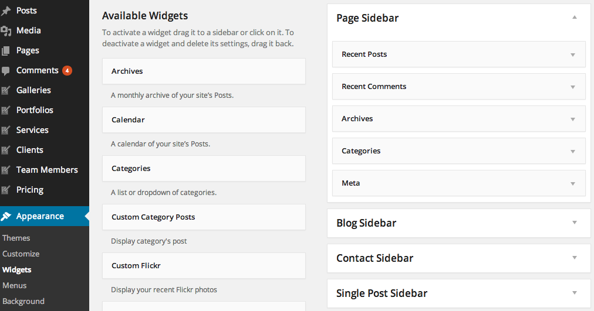
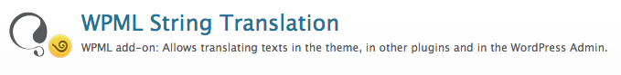

“GrandBlog Wordpress Template” Documentation by “ThemeGoods”
“GrandBlog Theme Documentation”
Table of Contents
- What's Included
- Installation
- Setting up header
- Setting up Footer
- Setting up Sidebar
- Setting up Pages & Contact Page
- Setting up Homepage
- Setting up Blog Post
- Setting up Category
- Setting up Image Gallery
- Widgets
- Theme Customize
- Theme Translation
- WPML Plugin For Multilingual Content
- How to update the theme
- Updating from existing theme
- How to speed up your site using plugins
A) What's Included - top
When you purchase our theme from Themeforest. You can download GrandBlog files from Themeforest > Your Account > Downloads.
Navigate through your purchased items and find GrandBlog. Click download button then you will se 2 options. Main file contain everything. Installable Wordpress Theme is included only installable Wordpress theme file. Check list of what's included when you download the main file option.
- Installable Theme File (.zip) - You can upload this file to your Wordpress to install the theme.
- Documentation - Contain theme documentation file.
- Licensing Folder - Contain all licensing info files.
- Changelog (.txt) - Included all theme versions changelog info
Theme Support
All of our themes come with free support and currently we handle all support questions through Our Support System.
In order to help speed up solution for your requests. Please follow steps below before submitting a new ticket. This is for the benefit of everyone in order to help find the solution for your question quickly.
- Make sure you are running the latest version of theme and the latest version of WordPress.
- Check out theme documentation for the answer to your question.
- Disable any additional 3rd party plugins you are using to check if it fixes the issue.
- If you still have the issue. Submit a ticket with URL of page which has issue.
- Responding to questions or problems regarding the item and its features
- Fixing bugs and reported issues
- Providing updates to ensure compatibility with new software versions
- Customization and installation services
- Support for third party software and plug-ins
B) Installation - top
In order to begin installing GrandBlog theme. You need the latest version of Wordpress. Here is the download URL. Once you downloaded and set it up, You are ready to go.
Upon downloading the package, you will have an Installable Theme File (.zip) inside the theme package. Follow the steps below to install theme

- Go to your Wordpress Dashboard and navigate to Appearance > Themes
- Click Add new and hit upload button
- Select GrandBlog Installable Theme File (.zip) file from your computer and click "Install Now" button
- Once finished uploading theme file. Go to Appearance > Themes and activate it.
- Then you will be redirected to theme admin panel page.
Common Wordpress Installation Issue
Missing style sheet error when installing the theme A common issue that can occur with users new to installing WordPress themes is a “Broken theme and/or stylesheets missing” error message being displayed when trying to upload or activate the theme. This error message does not mean that the theme you have purchased is broken, it simply means it has been uploaded incorrectly. Luckily, there is a very easy fix.Wordpress Tutorials
In order to use the theme. You have to install a working version of WordPress. If you are new to WordPress and need help installing it. Below are few tutorials and video tutorials created by WordPress and WooThemes.
Required Plugins
- GrandBlog Theme Gallery and Shortcode – Add theme gallery functionality and shortcode.
- oAuth Twitter Feed for Developers - Twitter API settings plugin.
- WP Review – helps provide post review feature.
- EWWW Image Optimizer – helps optimise your images file size without reducing its quality.
- Sharpen Resized Image – helps sharpen your image quality without increasing file size.
- Post Type Order – helps order all custom post type items using drag&drop interface.
- WP Super Cache – add caching to your WordPress for better loading speed.
- Install and activate GrandBlog Custom Post Type plugin before you proceed.
- Open Theme Setting > Demo Content then select which demo you want to import and click “Import Selected”.
- It can take few minutes to import everything (depends on your webhost location and connection speed).
- Once it’s completed you will see success message and you can now enjoy demo content.
- Demo Import Fails: “Sorry but your import failed.”
- If you get this error, most likely the importer can not work with your webhost. You will need to ask your webhost to increase max_execution_time (or any other webserver timeout to at least 300 secs) and memory_limit (to at least 196M).Another thing which might solve the issue is to increase WordPress memory limit setting. Add below code to your wp-config.php before importing demo content.define(‘WP_MEMORY_LIMIT’, ‘500M’);
define( ‘WP_MAX_MEMORY_LIMIT’, ‘500M’ );Basically, If the limits on your server settings are very low then the content will not import. - Go to Appearance > Menus. Click "Create Menu" button
- To add menu items, select one of your pages/posts on the left hand boxes. Then click "Add To Menu".
- If you want to add custom link menu item (for example home link). Select "Links" and enter URL, Link Text there.
- You can organise your menu items using drag&drop functionality. Simple drag a menu item right below to the parent menu item.
- After setting up your menu, scroll down to the bottom of the page then assign the menu to "Primary Menu" in the Theme Locations box.
- Primary Menu - Main menu under logo
- Top Bar Menu - Menu at top of page layout (doesn't support sub menu)
- Side (Mobile) Menu - Slide in menu. It's optional on desktop and primary menu for mobile devices
- Footer Menu - Menu at bottom of page layout (doesn't support sub menu)
- Go to Appearance > Menus. Click “Create Menu” button
- To add menu items, select one of your pages/posts on the left hand boxes. Then click “Add To Menu”.
- If you want to add custom link menu item (for example home link). Select “Links” and enter URL, Link Text there.
- You can organise your menu items using drag&drop functionality. Simple drag a menu item right below to the parent menu item.
- After setting up your menu, scroll down to the bottom of the page then assign the menu to “Top Bar Menu” in the Theme Locations box.
- Go to Appearance > Menus. Click “Create Menu” button
- To add menu items, select one of your pages/posts on the left hand boxes. Then click “Add To Menu”.
- If you want to add custom link menu item (for example home link). Select “Links” and enter URL, Link Text there.
- After setting up your menu, scroll down to the bottom of the page then assign the menu to “Side (Mobile) Menu” in the Theme Locations box.
- Go to Appearance > Menus. Click “Create Menu” button
- To add menu items, select one of your pages/posts on the left hand boxes. Then click “Add To Menu”.
- If you want to add custom link menu item (for example home link). Select “Links” and enter URL, Link Text there.
- You can organise your menu items using drag&drop functionality.
- After setting up your menu, scroll down to the bottom of the page then assign the menu to “Footer Menu” in the Theme Locations box.
- Open Appearance > Customize > Footer > Copyright > Copyright Right Area Content and select “Footer Menu”.
- First you have to enable it. Go to Appearance > Customize > Footer > General < Footer Sidebar Columns
- Select number of columns to display from 1-4
- To add widgets, go to Appearance > Widgets
- You will find “Footer Widget” section. Simply drag and drop widgets you want from the left side boxes into the “Footer Sidebar”.
- Go to Theme Setting > Social Profiles and enter instagram username option.
- Next you will need to login to your Instagram account and click here to find Access Token.
- Once you get Access Token. Go to Theme Setting > Social Profiles and enter Instagram Access Token option then save changes
- Now you can add Custom Instagram Widget to any sidebar you want using Appearance > Widgets.
- Page Sidebar – Default sidebar for homepage and any new pages created.
- Blog Sidebar – Default sidebar for any new blog template created.
- Contact Sidebar – Default sidebar for contact page.
- Single Post Sidebar – Sidebar for all single posts.
- Archives Sidebar – Sidebar for post archive page.
- Category Sidebar – Sidebar for post category page.
- Tag Sidebar – Sidebar for post tag page.
- Footer Sidebar – Sidebar for footer widgets area.
- Go to Theme Settings > General you will see Custom Sidebar Settings.
- Enter sidebar name you want to create and click save changes
- Go to WordPress Dashboard > Pages > Add New
- Add page title and you will find “Page Options” box on the right side.
- Select your parent page in page attribute option box on the bottom right.
- Select your page template from template dropdown list in page attribute option box on the bottom right.
- Enter your page content to editing field. You can use visual or text editor. Page content is mainly built using text, HTML or shortcodes.
- Hide Page Title – Check this option if you want to hide page title.
- Page Tagline(Optional) – Enter page tagline. It will displays under page title (optional)
- Page Sidebar(Optional) – Select this page’s sidebar to display (support only page templates with sidebar)
Additional Plugins We use on demo site
Import Demo Content
When you first install the theme. It won’t included all extra content that you have seen from live demo site. You can choose to import demo contents or only demo settings and here are the different.What’s included: posts, pages, images, videos and theme settings (typography, colors, styling and theme options).
B 1) Setup Header - top
Setting up Menu
Theme Support custom WordPress menu, you can organise them into dropdown menu too.

Sticky Menu (Optional)
If you enable sticky menu option. When visitor scroll down to page. The menu bar will stay at top while visitor scrolling. You can enable this option via Appearance > Menu > General >Enable Sticky Menu
Mega Menu (Optional)
Mega Menu is extensive sub menu which allow you to display large amount menu items into columns. You can select from 2-5 columns. To setup mega menu. Open Appearance > Menus then you can drag menu items to be child of parent items.
On menu parent item, open its option box and add class “megamenu” to enable mega menu display. Then enter number of columns you want. For example if you want to display mega menu in 4 columns enter class “col4“.
So you need to add and organise menu items of this mega menu into 4 columns. Please see above screenshot of Appearance > Menus to get an example.
You can also can display or hide columns name.
By default it displays each mega menu columns name ex. Project Fullwidth, Project Grid etc. You can also hide it by open menu item option and add “hidden” CSS class.
Customise Main Menu Options and Colors
You can fully customise main menu options ex. typography, colors, background colors etc. Go to Appearance > Customize > Menu
Setup Top Bar Menu (Optional)
Note: top Bar Menu is not support sub menu.
Setup Side Menu (Mobile Menu)
Side menu is hidden by default. Visitor click three bar icon on the top right of screen to open it. It’s also main menu or tablet (portrait view) and mobile devices.
Customise Side Menu Options and Colors
You can fully customise main menu options ex. typography, colors, background colors etc. Go to Appearance > Customize > Menu > Side Menu
Search on Side Menu
To add search function to side menu. Open Appearance > Customize > Menu > Search > Enable Search. It displays search bar at the top of side menu.
Instant Search
Instant search use AJAX technology to returns search results as you type.OpenAppearance > Customize > Menu > Search < Enable Instant Search
Setup Footer Menu (Optional)
NOTE: Footer menu is not support sub menu.
Add Contact Info (Optional)
You can add contact information displays on top bar. Go to Appearance > Customize > Menu > Contact Info
Note: Please make sure you enable Top Bar in order to display contact info content.
Setup Social Icons
First you need to add your social media accounts. Go to Theme Settings > Socials Profiles and enter your profiles accounts there. If you don’t want to display some social icons, simply leave them blank and it won’t displays on live site.
Upload Logo
By default theme displays its standard logo in header. You can replace it with your logo image. Go to Appearance > Customize > Logo & Favicon Click “Select Image” button and select logo image from your computer or media library.
Favicon (Optional)
Favicon option is also onAppearance > Customize > Logo & Favicon. Favicon is an icon for your site display in various places including browser address bar, or next to website name in bookmark list. You simply click select image button and select favicon file to upload (recommend .png file)
Top Bar
Top bar allow to display extended content ex. top menu, social icons etc. above main menu area, To enable it open Appearance > Customize > Menu > Top Bar
There are options to change the top bar background color, font color and border color too. Simply click on the colorbox to open color picker panel. Select color you want and once finish customising, save changes.
B 2) Setting up Footer - top
The first area of theme footer is a widgetized section which you can displays them into 1-4 columns. This content can be organised in WordPress Dashboard > Appearance > Widgets
Setup Footer Sidebar
Setup Footer Sidebar Widgets
Setup Footer Colors
You can change footer background color, font color and etc. Go to Appearance > Customize > Footer > Colors once finish customising. Click “Save All Changes” button.
Setup Copyright Bar
Below the widgetized area of footer is copyright bar where you can add your copyright text including link to it. Go to Appearance > Customize > Footer > Copyright
The go to top option if you enable it. It will display arrow up button when visitor click on it. It will redirect to the top of page.
Instagram Footer Photostream
You can also display Instagram photostream at the bottom of page before footer. Please make sure you follow above steps of how to setup Instagram Access Token. Then go to Theme Setting > Social Profiles > Photo Stream and Select photo stream photo source. It displays before footer area to “Instagram”.
Flickr Footer Photostream
You can also display Flickr photostream at the bottom of page before footer. Go to Theme Setting > Social Profiles > Photo Stream and Select photo stream photo source. It displays before footer area to “Flickr”.
B 3) Setting up sidebar - top
Pre defined Sidebars
Create a New Sidebar
Theme has pre-defined sidebar but you can also create your own custom sidebar for your pages.
Assign widgets to the sidebar

You can add widgets to the sidebar using Appearance > Widgets You will find your selected widget on the left side. Simply drag and drop widgets you want from the left side boxes into the sidebar box.
B 4) Setting up Pages & Contact Page
Page With Sidebar
Theme has 2 general page with sidebar templates. You can select between left and right sidebar templates. Follow above steps and when you select page template select Page With Right Sidebar or Page With Left Sidebar as page template.
Next look at page option box, select the sidebar you want to display on this page and save changes.
Page Header Background
When you create a page. Check “Display Page Title” in page option meta box. You can customise page title alignment, typography, font size etc. Go to Theme Setting > Page Title.

When you create a page. You can upload background image to header area. Look at featured image at the bottom right of edit page/post and upload image you want to display as header background image
Shortcode Generator
You can use Shortcode Generator in Shortcode option box below editing field to generate shortcode. Simply select shortcode you want to use and enter its options. Once finish click “Generated Shortcode” and copy shortcode to editing fields.

Page Options

Setup Contact Page
 First, you have to setup your email address. Open Theme Setting > General > Contact Form Setting and setup your email address.
First, you have to setup your email address. Open Theme Setting > General > Contact Form Setting and setup your email address.
From your admin sidebar, open Pages > Add New. You will get add new page form. Enter page title and description.
Next look at Page Attributes" box. Select "Contact" for page template and click on "Publish".
Setup About Page
From your admin sidebar, open Pages > Add New. You will get add new page form. Enter page title and description.
Next look at Page Attributes" box. Select "Default Template" for page template and click on "Publish".
Using this code below for sample about page content
[tg_small_content]<blockquote>Good design is making something intelligible and memorable.<br/>Great design is making something memorable and meaningful.</blockquote> Sed ut perspiciatis unde omnis iste natus error sit voluptatem accusantium doloremque laudantium, totam rem aperiam, eaque ipsa quae ab illo inventore veritatis et quasi architecto beatae vitae dicta sunt explicabo. Nemo enim ipsam voluptatem quia voluptas sit aspernatur aut odit aut fugit.[/tg_small_content] [caption id="attachment_483" align="alignnone" width="1440"]<img src="http://themes.themegoods2.com/grandblog/demo/wp-content/uploads/2015/07/22.jpg" alt="Silver Lake" width="1440" height="960" class="size-full wp-image-483" /> Silver Lake[/caption] [one_half] Meh synth Schlitz, tempor duis single-origin coffee ea next level ethnic fingerstache fanny pack nostrud. Photo booth anim 8-bit hella, PBR 3 wolf moon beard Helvetica. Salvia esse nihil, flexitarian Truffaut synth art party deep v chillwave. <i>Seitan High Life reprehenderit consectetur cupidatat kogi. Et leggings fanny pack, elit bespoke vinyl art party</i> Pitchfork selfies master cleanse Kickstarter seitan retro. Drinking vinegar stumptown yr pop-up artisan sunt. [/one_half] [one_half_last] Meh synth Schlitz, tempor duis single-origin coffee ea next level ethnic fingerstache fanny pack nostrud. Photo booth anim 8-bit hella, PBR 3 wolf moon beard Helvetica. Salvia esse nihil, flexitarian Truffaut synth art party deep v chillwave. <i>Seitan High Life reprehenderit consectetur cupidatat kogi. Et leggings fanny pack, elit bespoke vinyl art party</i> Pitchfork selfies master cleanse Kickstarter seitan retro. Drinking vinegar stumptown yr pop-up artisan sunt. [/one_half_last]
B 5) Setting up Homepage - top
By default, when you activated theme. Your homepage will display your recent posts and you can change its option. From your admin sidebar Settings > Reading > Front page displays select "Your latest posts". You can also change number of blog posts per page there too.
Change homepage layout

You can customize homepage layout. Go to Appearance > Customize > Blog > Layout > Homepage Layout and select layout you want then save changes. You can also customize other default Wordpress pages ex. category, archive etc. there too.
Setting up Slider

You can customize homepage layout. Go to Appearance > Customize > Blog > Slider and check "Display Slider" option. Next select slider layout you want and slider category so slider will displays only selected category's posts.
B 6) Setting up Blog Post - top
Creating a blog post
First thing to create blog content is to create a post post. Theme has various post options for you display different content on your blog post. Here are the steps to create a blog post.
- Go to WordPress Dashboard > Posts > Add New
- Enter post title and content. You can use any shortcode or HTML to editing field.
- Assign this post to category using categories box on the right side
- Add tags to this post. Type tag name in to the field in Tags box on the right side.
- Upload post featured image using set featured box on the bottom right side. All pages will use this image for post preview image and thumbnail.
- Once you finish, click Publish.
Post Options
- Post Layout – Select single post page layout between fullwidth and with right sidebar.
- Featured Content Type – Select featured content type to displays at the top of this post. You can select from Image, Gallery, Vimeo Video and Youtube Video.
- Gallery – Select image gallery you want to display at the top of this post. (if you select featured content type as Gallery)
- Vimeo Video ID – Enter Vimeo Video ID ex. 73317780 you want to display at the top of this post. (if you select featured content type as Vimeo Video)
- Youtube Video ID – Enter Youtube Video ID ex. 6AIdXisPqHc you want to display at the top of this post. (if you select featured content type as Youtube Video)
Post Review Options
To have review feature. Please make sure you install this plugin name "WP Review". Then when you edit post, there is Review box under Shortcode Options box.

Select "Review Type" you want. For example "Star" then you can add review feature name and star. Once you finish customising review options for the post then update the post.
Single Post Settings

- Display post header -Check this to display featured image as post header background
- Display featured content – This option will display post’s featured image or gallery at the top of single post page.
- Display tag – This option will display post’s tags at the bottom of single post page.
- Display about author – This option will display post’s author information at the bottom of single post page.
- Display Related posts – This option will display related posts under main post content.
Posts per page
 From your admin sidebar, open Settings > Reading. Then adjust number of "Blog pages show at most". Once you finish, click "Save Changes".
From your admin sidebar, open Settings > Reading. Then adjust number of "Blog pages show at most". Once you finish, click "Save Changes".
B 7) Setting up Category - top

You can organise posts into category. Each post can be assigned to multiple categories. First you have to create a category. Open Posts > Categories. You will see list of current categories you have. To add new one. Enter Category name, slug and click "Add New Category" button.

Now when you create a blog post. Look at categories option box, select categories you want to assign and save changes.
Setting up Category Page

When you created a category. Wordpress actually creates category for you. To add a category archive to one of your menus, go to “Appearance > Menus” in the WordPress admin. Look for the section labeled “Categories.” Then, select the categories you want and add them to your menu.
You can customize category page layout. Go to Appearance > Customize > Blog > Layout > Category Page Layout and select layout you want then save changes.
B 8) Setting up image gallery - top
First you have to create a gallery. From your admin sidebar, open Galleries > Add New Gallery. You will get add new gallery form. Enter gallery title and description then click “Publish”.
Next you have to add images to this gallery. From gallery admin page. Click on “Upload Image”.
Then select images you want to upload to this gallery. Once you finish upload each image. It will automatically attach to this gallery. You can also change image caption and description by clicking image from this page. If you want to change order of images within gallery. You can easily drag&drop image next to each one. Once you finish dragging, click “Update” to save changes.
Setting up gallery as post featured content

When you create a post. Look at post option box, select "Gallery" as content type. You will see gallery option with list of galleries. Select the one you want to display on this post and save changes.
B 9) Widgets - top

All widgets can be used in standard Wordpress widget system in Appearance > Widgets. You can drag&drop the widget on the left side over sidebar option on the right side. Each widget has its settings option and you put as many widgets as you want to the sidebar. Once you change the setting of widget, please make sure you click Save button.
Twitter Widget Option
In order to use new Twitter API. You have to register your application using your Twitter account. Please go to https://dev.twitter.com/apps/ and login with your Twitter accountCreate new application then click to create the access token, then refresh the page.

Next you will notice and bar stated that. This theme requires the following plugin: oAuth Twitter Feed for Developers.. Click "Begin installing plugin" to install the plugin. Then navigate to Settings > Twitter Feed Auth

Enter your API key, API secret, access token and access token secret there and you can add Twitter widget to sidebar using Appearance > Widgets
Facebook Page Like Widgets
On theme demo site. There is Facebook Page widget which can easily create using this plugin.
Mailing list subscription Widgets
On theme demo site. There is Mailing list subscription which can easily create using MailChimp server (You can create free account there ). You can download the plugin here.
Instagram Widgets
- Go to Theme Setting > Social Profiles and enter instagram username option.
- Next you will need to login to your Instagram account and click here to find Access Token.
- Once you get Access Token. Go to Theme Setting > Social Profiles and enter Instagram Access Token option then save changes
- Now you can add Custom Instagram Widget to any sidebar you want using Appearance > Widgets.
Please make sure you follow above steps of how to setup Instagram Access Token. Then when you add Instagram widget to sidebar. Enter number of photos you want to displays and save changes.
B 10) Theme Customize - top
Theme also support Wordprss customize. Go to Appearance > Customize. It will load all customization options on the left side. Simple change each options and it will preview results instantly on the right side. Once you finish customising. Click "Save" button.
B 11) Theme Translation - top
Theme includes bunch of PO translation files for each languages so you can use standard translation tools to help translate theme output strings to your desired language.
WordPress Translation Setting
For Pre-Wordpress 4.0 users please follow below steps
- Login to your FTP account and edit wp-config.php file.
- In wp-config.php file, look for WPLANG constant for example define(‘WPLANG’, ”);
- Define WPLANG constant by adding ISO language code of your desired language. For example if you want to add German language. Use this code define(‘WPLANG’, ‘de_DE.po’);
For WordPress 4.0 + users please follow below steps
- Login to your FTP account and edit wp-config.php file.
- In wp-config.php file, look for WPLANG constant for example define(‘WPLANG’, ”);
- Define WPLANG constant by adding ISO language code of your desired language. For example if you want to add German language. Use this code define(‘WPLANG’, ‘de_DE.po’);
- Login to your WordPress Dashboard and navigate to Settings > General Settings
- Make sure “Site Language” option is set to your desired language.
Storing Translation Files
By default storing inside theme folder. The theme language folder is wp-content/themes/tgGrandBlog/languages this method has one downside. Because whenevery you update the theme. The whole language folder will be replaced with original version which overwrite your translation files.
NOTE: So the solution is to backup your translation file before updating theme.
Translating The Theme
Theme use PO translation file which is industry standard translation method. In theme folder you will find a folder called languages. You will find each languages files store in the folder.
- *.po – A lists of all text strings in theme. The text strings are in English and you can add translation to each of text string.
- *.mo – This is the compiled .po file and is used by WordPress to translate the theme
If your language isn’t included in the theme language files. You have to create a new .po file from original Theme.po located in theme’s languages folder then save the new .po file with your language code for example de_DE.po
Translating The Custom Post Type Plugin
Custom Post Type Plugin use PO translation file which is industry standard translation method. In plugins folder you will find a folder called languages. You will find each languages files store in the folder.
If your language isn’t included in the theme language files. You have to create a new .po file from original GrandBlog-custom-post-en_US.po located in theme’s languages folder then save the new .po file with your language code for example GrandBlog-custom-post-de_DE.po
How to translate Po file using Poedit Application
Poedit application is the popular application uses to edit po file translation and it’s free. Click here to download Poedit application.
Now download and install Poedit application. Open language file you want to translate for example en_US.po You will find all English string in Source Text box.
Select text string you want to translate, add your translation text to “Translation” field. Once you finish translating. Save the file and it will automatically compiled to .mo file.
B 12) WPML Plugin For Multilingual Content - top
GrandBlog support WPML plugin for Multilingual content . First you have topurchase WPML license from https://wpml.org and your can download the plugin from your WPML account page (download WPML Multilingual CMS). Then install the plugin. From your admin sidebar, open Plugins > Add New > Upload. Then upload and install the plugin. Once you installed, activate it and it will be ready to use.

Now you will have WPML menu on the bottom left of Wordpress Dashboard. The first step is to setup your current language.
Next step. Select other languages you want to use on your site.
The last step is to add language switcher to your site. There are many ways to add it. You can select sidebar to display language switcher from the option "Choose where to display the language switcher widget".
If you are familiar with PHP coding. You can also add custom language switcher using PHP code. Please see sample and tutorials here.
Another option is to add language switcher to your menu. Check "Display the language switcher in the WP Menu". option and select your main menu.

Next, go to your WPML account > Downloads and download WPML String Translation plugin. Install the plugin. From your admin sidebar, open Plugins > Add New > Upload. Then upload and install the plugin. Once you installed, activate it and it will be ready to use.

Open WPML > Theme and plugins localization and check "Translate by WPML." and click Save button. Now WPML should added all translation strings to the system.

Open WPML > String Translation you will see list of all translation text. Click translations and enter translated text.
This is a basic step to translate theme strings into multiple languages. You can learn more about advanced options and other WPML features from WPML site.
B 13) How to update the theme - top
- First you need to download the latest version of theme. Log into your Themeforest account and navigate to your downloads tab. Find the “GrandBlog” theme purchase.
- Click the “download” button next to it and choose to download the “Installable WordPress Theme” which is just the WordPress file, or choose the “Main Files” which is the entire package which include theme documentation, plugins etc.
Update using WordPress Dashboard
- Backup current Theme Setting > Backup. You will get a .JSON file (just in case everything went wrong and you still have theme settings backup file to import).
- Also you may want to use a plugin to automate backing up your current theme and uploading the new version: http://wordpress.org/extend/plugins/easy-theme-and-plugin-upgrades/
- You need to deactivate “GrandBlog” theme in the Appearance > Themes by simply activating a different theme. Once you activate a different theme, you can delete the GrandBlog theme. Don’t worry. You really won’t loose any of your data.
- Get the “GrandBlog-v…installable.zip” file from Themeforest Account > download. If you downloaded the “Main Files” from Themeforest, then you need to unzip the archive file you received, the GrandBlog-v…installable.zip will be inside of it.
- Upload GrandBlog-v…installable.zip using Appearance > Themes once you uploaded successfully, activate the theme.
Update using FTP
- Backup current Theme Setting > Backup. You will get a .JSON file (just in case everything went wrong and you still have theme settings backup file to import).
- Also you may want to use a plugin to automate backing up your current theme and uploading the new version: http://wordpress.org/extend/plugins/easy-theme-and-plugin-upgrades/
- Login to your FTP account. Navigate to wp-content > themes location and backup your “GrandBlog” theme folder by saving it to your computer, or you can choose to simply delete it. Don’t worry. You really won’t loose any of your data.
- Get the “GrandBlog-v…installable.zip” file from Themeforest Account > download. If you downloaded the “Main Files” from Themeforest, then you need to unzip the archive file you received, the GrandBlog-v…installable.zip will be inside of it.
- Drag and drop the new “GrandBlog” folder into wp-content > themes and select “Replace” if you didn’t delete it.
Common Issues
- Are You sure you want to do this?
If you get this message. Please check with your webhost upload file size limit and ask them to increase the limitation. - Theme install failed destination folder already exists
This is because WordPress allows you to have only 1 theme with the same name and folder. To get around this issue, please update theme using auto updater or FTP steps above.
B 14) Updating from existing theme - top
If you update your existing blog site to GrandBlog theme. You have to run this plugin to regenerate all posts's thumbnails from your existing theme setting. Once you installed the plugin, open Tools > Regen. Thumbnails and click on “Regenerate Thumbnails” button.
B 15) How to speed up your site using plugins - top
There are many ways to help speed up your site and here are some methods we use to speed up our demo sites and we want to share them to you.
CSS and Javascript Compression
You can enable CSS and Javascript compression via Theme Setting > Script. This option will compress javascript CSS and javascript file to smaller size.
Caching Plugin
You can use 3rd party plugin to add caching to your WordPress site. It helps speed up response time to your visitors. Here are 2 plugins we recommend.
- W3 Total Cache – Recommend for advanced user with many more options.
- WP Super Cache – Easy to setup caching plugin. Recommend for normal user.
Image Optimisation Plugin
Adding images to your content sometime causes site to load slowly. Here is EWWW Image Optimizer it helps optimise and compress your images files size without loosing quality.
NOTE: If you already have image uploaded and install EWWW Image Optimizer. Please run Regenerate Thumbnails plugin so your previous uploaded images are optimised.
Once again, thank you so much for purchasing this theme. As I said at the beginning, I'd be glad to help you if you have any questions relating to this theme. No guarantees, but I'll do my best to assist. If you have a more general question relating to the themes on ThemeForest, you might consider visiting the forums and asking your question in the "Item Discussion" section.
ThemeGoods